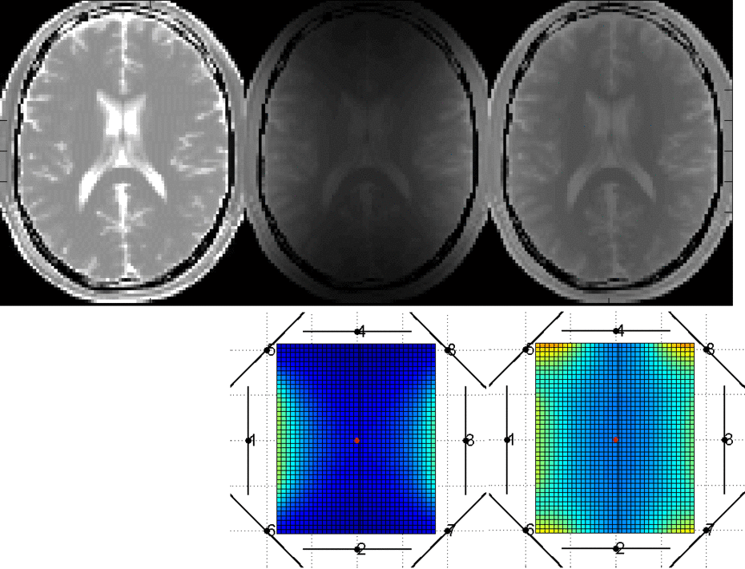

Welcome to MRiLab
Publications
* ISMRM 2013 Abstract
* ISMRM 2013 Poster
* ISMRM 2014 Abstract
* ISMRM 2016 Workshop Abstract
* TMI 2016 Paper
Documentation
* v1.0 User Guide
* v1.1 User Guide
* v1.2 User Guide
* v1.3 User Guide
Videos
* MRiLab Demo
Links
* Fang Liu
* MatrixUser
* UW MRI Research
* UW Medical Physics
Visitor Globe
The MRiLab is a numerical MRI simulation package. It has been developed and optimized to simulate MR signal formation, k-space acquisition and MR image reconstruction. MRiLab provides several dedicated toolboxes to analyze RF pulse, design MR sequence, configure multiple transmitting and receiving coils, investigate magnetic field related properties and evaluate real-time imaging technique. The main MRiLab simulation platform combined with those toolboxes can be applied to customize various virtual MR experiments which can serve as a prior stage for prototyping and testing new MR technique and application.
The MRiLab features highly interactive graphical user interface (GUI) for the convenience of fast experiment design and technique prototyping. High simulation accuracy is achieved by simulating discrete spin evolution at small time interval using the Bloch-equation and appropriate tissue model. In order to manipulate large multidimensional spin array, MRiLab employs parallel computing by incorporating latest graphical processing unit (GPU) technique and multi-threading CPU technique. With efficient parallelization, MRiLab can accomplish multidimensional multiple spin species MR simulation at high simulation accuracy and time efficiency, and with low computing hardware cost.
MRiLab is released as a free software. This means that you are free to use and modify this software as your needs,
as long as you acknowledge the original author in any future work. If you find MRiLab useful for the publication
of any scientific results, please cite this paper:
Fast Realistic MRI Simulations Based on Generalized Multi-Pool Exchange Tissue Model. IEEE Transactions on Medical Imaging. 2016. doi: 10.1109/TMI.2016.2620961
Dowload: |SourceForge | GitHub|
Please send email to Fang Liu to let the author know you are using MRiLab, your suggestions and requests may be the next step for improving MRiLab. As a return, the author can keep you informed with the new MRiLab version and new features. Thanks.
MRiLab v1.3 is now available, with new features of:
> Support multi-pool exchange tissue model
> Provide simulation in batch mode
> Provide spatial SAR and power evaluation
> Polish graphical interface
> More...
Author:
Fang Liu (leoliuf@gmail.com)
Department of Medical Physics
University of Wisconsin-Madison
MRiLab Rocks
-

bSSFP Banding Artifact
-

Fat Water Chemical Shift
-

Multi RF Transmitting
-

Multi Channel Receiving